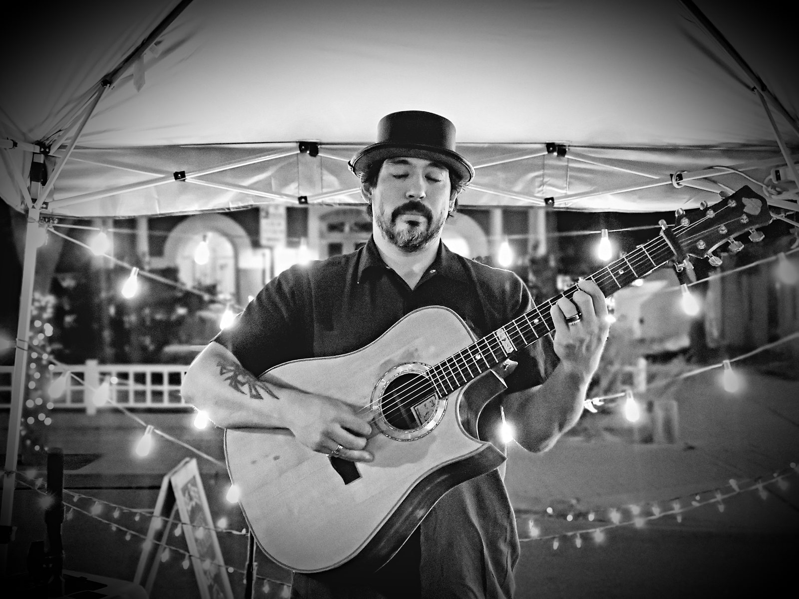

Colorado Springs holiday parties
Corporate holiday parties in Colorado Springs, November and December.
A resort ballroom with the whole company in it, dinner at a volume people can talk across, and a dance floor that fills once the thank-yous are done. That’s the Colorado Springs company party, and the buyers who book it are different from Denver’s: defense contractors, firms clustered around the Air Force Academy and the bases, and national nonprofits headquartered in town. They bring vendor onboarding and purchase orders to a band booking, so they decide early, and the vendor file is usually the slowest step between a shortlist and a signature.
The venues are decided early too. The Broadmoor’s December calendar stacks company parties onto the same Fridays and Saturdays as the rest of the Front Range, and the ballrooms at Garden of the Gods Resort and Club and Cheyenne Mountain Resort fill the same way. We can quote against a purchase order, and the certificate of insurance and W-9 come with the contract.
Photos
What the night looks like.
A band on a stage, and Tony Medina, one of our named acts, on the bill.


details and costs
Two common configurations of a Springs party.
A duo holds a firm's dinner at conversation volume for the whole evening. A quartet is the booking when a ballroom floor has to fill. Colorado Springs is a Front Range drive rather than a mountain one, so travel on a Springs quote is a short line and the date is the main factor that affects the price.
A Springs party is usually a ballroom with remarks in it and a dance floor that has to fill afterwards. The duo holds the first half so people can hear each other across a table; the quartet takes the second half and gets loud on cue when the program ends.
When one act should cover dinner and the dance floor both, Tejas Singh can start as a duo and finish as a quartet on a single contract, with the same voice through both halves and one invoice at the end.
What live music costs in this market is on the pricing page. A December Saturday and a Tuesday in November are two different quotes, so the date is the first thing we’ll ask for.
Where the parties happen
Colorado Springs venues, by tier.
The Springs season runs in tiers, and each tier books a different size of night.
- The resort tier
- The Broadmoor, Garden of the Gods Resort and Club, Cheyenne Mountain Resort. Their ballroom calendars hold the market's biggest company parties and stack them onto the same few peak December Saturdays. These are quartet bookings once the dance floor opens, 88 to 95 dBA on the floor, with dinner and remarks held at conversation volume before it.
- The downtown tier
- The Mining Exchange and the Antlers. A function floor or a private dinner for the firm that wants the night walkable from the office. These are duo and trio bookings, 65 to 72 dBA through dinner, with a lift for the toasts.
- The restaurant buyout
- The whole company sits at tables, with the music under the conversation for the entire night. It's a solo or a duo, the simplest way a small company does December, with no dance floor to fill.
The same three resorts anchor the retreat season, and corporate retreats get their own page.
August through October
When the Springs season is decided.
The season is decided August through October here as it is everywhere on the Front Range, and New Year's Eve goes first. A Springs buyer usually has a second timeline: vendor onboarding, a PO number and a signature chain take however long your finance process takes, so it helps to start the vendor file when you shortlist the venue.
Front Range travel is one short line on the quote covering the drive down from Denver, with no lodging line, and the night is the same one a Denver client gets: load-in of 45 to 90 minutes depending on size, sound support that's the right size for the venue, and the dock and unload settled with the venue before the day. For a ballroom night with remarks and an award in it, the run of show page shows how the music is built around a program.
The season's dates, with the peak dates marked, are on the holiday season page, and the Denver page carries the same dates alongside the downtown dock detail.
FAQ
Colorado Springs booking questions.
- Does a Colorado Springs booking cost more than a Denver one?
- Only by a short travel line, covering the drive down from Denver. Colorado Springs is a Front Range drive rather than a mountain one, so there's no lodging line. A holiday weekend prices above a standard date here as it does everywhere in this market.
- Can you clear a defense contractor's vendor process?
- Yes. We can be set up as a vendor and quote against a purchase order, and the W-9 and certificate of insurance come with the contract. Start onboarding when you shortlist dates; it's usually the slowest step in a corporate booking.
- What size fits a Broadmoor-class ballroom party?
- A quartet, once the dance floor has to fill. Dinner and remarks sit at 65 to 72 dBA, which a duo or trio holds comfortably; dancing runs 88 to 95 dBA, which takes a quartet. One act can start as a duo and finish as a quartet on a single contract.
- Which dates does the season cover for Colorado Springs?
- The same dates as the rest of the Front Range: Thursdays, Fridays and Saturdays across November and December 2026, minus Thanksgiving and Christmas, plus New Year's Eve, with the peak dates marked on the holiday season page. Tell us the date and the venue and we'll check the booking calendar.
Tell us the date and the venue in Colorado Springs, and we'll take it from there.
Live music for your event, from a solo musician to a full band, with sound support that’s the right size for the venue and a personal contact for the night.
Send us the date and the venue, and we’ll come back with a recommendation and a price for your night. What live music costs in this market is on the pricing page.